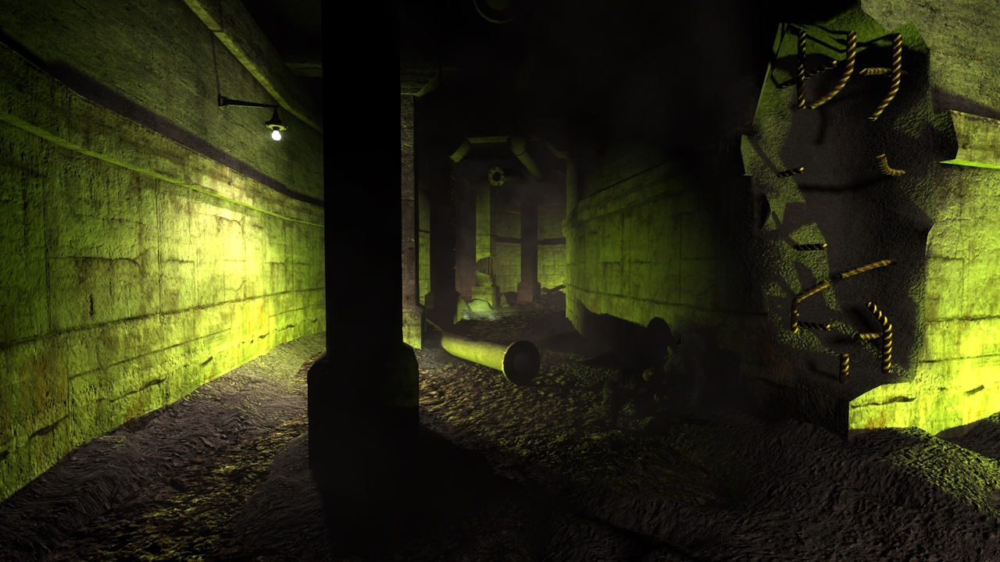
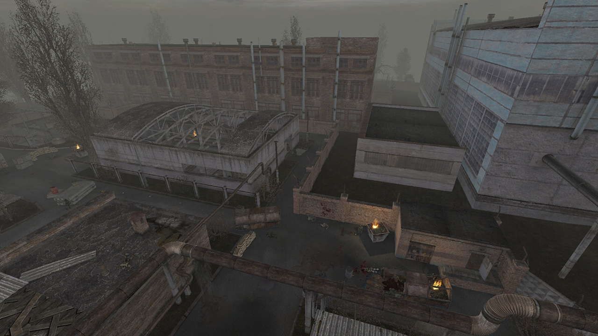

Локации
Кордон

Локация представляет собой холмистую местность с сельскохозяйственными и логистическими объектами вокруг однополосной дороги, пересекающей всю локацию. Начинается она блокпостом военных, преграждающим путь как в Зону, так и из неё, также распространяя через громкоговорители антисталкерскую пропаганду; все подходы к блокпосту со стороны Зоны заминированы. На востоке от него находится тоннель, ведущий на Болота. В южной части локации в стороне от дороги находится небольшая деревушка, заселенная сталкерами-новичками. За ней расположился бункер местного торговца Сидоровича. В другой стороне, северо-восточнее, расположился автокооператив «Локомотив», постоянно переходящий из рук в руки. На восток от АТП тянется грунтовая дорога к автомобильному туннелю в сторону Тёмной Долины.
Окрестности на две стороны разделяет железнодорожная насыпь с мостом, обвалившимся после очередного выброса. В 2012 году он подконтролен группе военных, пропускающих сталкеров за неопределённую плату. Альтернативным путём на другую сторону является тоннель с движущимися «электрами», расположенный под той же железнодорожной насыпью, чуть западнее основной дороги.
За тоннелем, по левую сторону дороги, располагается свиноферма, в 2011 году бывшая основной базой Одиночек. Прямо напротив неё на возвышенности находятся развалины хутора, где в 2011 году находилась единственная база бандитов на Кордоне, а в 2012 году Меченый встретится сначала с Лисом, а после с Проводником. На самом севере локацию завершает дальний блокпост, разделяя Кордон и Свалку. В «Чистом Небе» юго-западнее блокпоста есть ещё один проход на север — труба через холмы, к которой прилегает небольшая стоянка в ложбине.
Свалка
Изначально территория Свалки была равниной, окружённой естественными границами, но после катастрофы 1986 года из мусора были насыпаны огромные холмы, превратившие местность в пересечённую. Главной артерией локации является дорога, идущая от Кордона к заводу «Росток». Условно локацию можно разделить на южную и северную половину, где линией раздела будет служить воображаемая линия от туннеля с железной дорогой в депо. На самом юге локации располагаются ворота, отделяющие Свалку от пространства за локацией и брошенный армейский конвой. Из-за огромных концентраций железа и радиации кучи мусора привлекают аномалии и сталкеров.
НИИ «Агропром»

НИИ «Агропром» — локация рядом с Болотами, Свалкой и Янтарём. На окраинах этой локации находится большое количество аномалий и очагов повышенной радиации.
В центре локации расположен корпус фабрики «Агропром», находящийся в непосредственной близости от железнодорожных путей, ведущих на Свалку. В ТЧ, именно здесь военные устраивают засаду на сталкеров, а Меченый получает информацию от Крота о расположении тайника группы Стрелка. В ЧН, данная территория является пристанищем сталкеров, где Шрам может как поторговать, так и улучшить оружие, а заодно помочь одиночкам избавиться от напастей.
На юго-западе находится исследовательский корпус НИИ «Агропром». Некоторое время являлся главной базой группировки «Долг» в ЧН, а после — местом пребывания взвода солдат, охраняющих секретные документы в ТЧ. Несмотря на хорошо охраняемый периметр, в ТЧ эта база имеет лаз в подземелье, откуда можно проникнуть на эту территорию.
На северо-западе игрок обнаружит небольшое болото, вокруг которого любят бродить мутанты.
Северо-восточная часть локации является, пожалуй, наиболее заброшенной в обеих частях игры, однако представляет больший интерес сталкеров в ЧН. В ТЧ здесь можно найти множество редких и не очень артефактов, и почти вся местность усеяна аномалиями гравитационной природы, что, однако, не особо мешает обитающим там стаям собак.
В подземелье «Агропрома» находится много мрачных и многоуровневых тоннелей — укрытий для бандитов и мутантов, а также квестовый тайник группы Стрелка.
Подземелье «Агропрома»
На этой локации игрок впервые встречает опасных мутантов Зоны — кровососа и контролёра, а также находит первые обширные сведения о группе Стрелка. От первоначального подземного комплекса осталась доступной сравнительно небольшая его часть. Катакомбы, примыкающие к подвалу самого НИИ, патрулируются солдатами, отправленными сюда в наказание за провинности. В дальней части тоннеля обосновались бандиты, периодически выходящие на поверхность. Остальная часть подземелья пуста, если не считать контролёра и кровососов, постепенно облюбовавших эти сырые места. Сюда иногда приходят Фраер и Кочерга — двое бандитов-отшельников.
В ЧН данная локация имеет гораздо более обширную территорию подземных коммуникаций по сравнению с подземельем из ТЧ. Это связано с тем, что большую часть тоннелей затопил Шрам по просьбе Крылова, лидера «Долга» в 2011 году, по мнению которого это должно было остановить мутантов, которые вылезали на поверхность из подземелья и сильно досаждали. После отключения водоперегонной установки большая часть подземных коммуникаций под НИИ «Агропром» оказывается затопленной, в том числе и вход через пещеру.
Тёмная Долина
Аграрно-индустриальная местность, присущая большей части пригородов на территории постсоветского пространства. Ландшафт холмистый, на западной границе проступает характерный для соседней Свалки ландшафт с резким обрывистым ущельем, ведущем к ней, Лесистость небольшая, основная часть флоры — кустарники. Есть два заболоченных озера, над одним из которых проходит автомобильный мост.
На севере находится недостройка. В 2011 году эта постройка являлась базой группировки «Свобода», но позже на ней обосновались бандиты. Восточнее, через дорогу, находится бензоколонка. В центральной части, на востоке, присутствует фабрика, в подвале которой находится вход в секретную лабораторию X18, недалеко автомобильный мост, построенный над заболоченным озером. В юго-западной части есть старая свиноферма с водонапорной башней. Юго-восточная часть в основном пустынная.
В первой части, здесь выполняется квест Сидоровича на уничтожение кровососа. Похожая ситуация складывается и во второй, куда Шрама отправят лишь по просьбе вернуть предмет. Основным отличием этой местности в Чистом Небе является аномалия «Разлом».
Лаборатория X18
На нижнем этаже есть помещение с разбитыми колбами, в которых находятся какие-то зародыши, которые напоминают физические тела полтергейстов. Вероятно зародыши в колбах — это карлики, бюреры, полтергейсты или псевдогиганты. В игре представляют из себя лишь декорацию.
В некоторых помещениях можно найти облучающую аппаратуру и клетки для подопытных, непонятные автоклавы, похожие на те, в которых находятся члены «О-Сознания», также в этой лаборатории можно найти подтверждение, что лаборатории серии «Х» относятся к «О-Сознанию».
Профилем лаборатории было исследование мутаций и экспериментирование над генами для создания мутантов с необычными физическими способностями. Возможно, обитающие в лаборатории снорки были подопытными в экспериментах, или одичавшими остатками персонала. Происхождение их из среды сталкеров, исходя из законсервированности лаборатории, маловероятно.
Судя по всему, в лаборатории работала часть группы учёных «О-Сознания», которые после завершения удачных экспериментов часть результатов по контролёрам вместе с оборудованием передали в лабораторию X16, исследовавшую пси-поле и возможность создания искусственного излучателя этого поля. Уже после этого, а также после создания опытного излучателя Кайманова в лаборатории X16 и улучшенной установки на Радаре, по-видимому, начались эксперименты с ноосферой, в итоге образовавшие Зону. Лаборатория X18 была повреждена и многие её сотрудники погибли, а часть подопытных вырвалась на волю. Это подтверждает версию о искусственном возникновении мутантов.
Бар
Бар — нейтральная территория, здесь любое проявление агрессии карается. Если игрок выстрелит в сталкера (но не убьёт), получит устное предупреждение, а за убийство по нему откроют огонь на поражение. Здесь можно спокойно отдохнуть, испытать себя на Арене, закупить снаряжение и найти себе работу.
Запрет на убийство касается только ГГ, на NPC он не распространяется. Поэтому если сюда забредают враждебные для ГГ персонажи (бандиты или наёмники), то возникают определённые сложности: они будут атаковать и игрока, и одиночек, и долговцев. А игрок должен либо пробежать мимо них «на аптечках», либо подождать, пока обитатели Бара уничтожат их. Игрок ни в коем случае не имеет права убивать их, иначе против него ополчится весь «Долг» и многие одиночки. Если на территории Бара убить члена враждебной группировки, имея дружественные отношения с «Долгом», то, несмотря на скрипт, члены этой группировки не будут на игрока нападать. А вот некоторые сталкеры, напротив, откроют по ГГ огонь. Безнаказанно на данной локации можно расстреливать лишь мутантов и противников на Арене.
В описании говорится, что на территории Бара нет аномалий, однако это не так. На его территории есть два типа аномалий: «трамплин» и «карусель». Данные аномалии находятся в месте, куда NPC не заходят, и представляют опасность только для ГГ. Та же «карусель» срабатывает при попадании в неё игрока, но не будет реагировать на помещённый в неё труп сталкера, когда как на другой локации она разорвала бы его на части. Но если игрок погибнет в ней, его труп будет разорван.
Дикая территория
Часть заброшенного завода «Росток», именуемая Дикой территорией, в отличие от Бара, по-настоящему дикая. Местность является прибежищем различных мутантов: здесь обитают тушканы, слепые псы, псевдособаки, снорки и кровососы. Аномальная активность также очень высока — из-за техногенного характера ландшафта и обилия заброшенных построек местность богата такими аномалиями, как «электра», «кисель» и «жарка», что в свою очередь, способствует порождению большого количества артефактов электрической, химической и термической природы — есть возможность найти до семи разновидностей артефактов, таких как: «Вспышка», «Слизняк», «Лунный свет», «Бенгальский огонь», «Капли», «Плёнка», «Огненный шар». Если зайти на локацию после полуночи, можно найти до десяти артефактов электрической природы. Особо часто попадаются артефакты «Бенгальский огонь».
Дикая территория совсем игнорировалась бы большинством сталкеров, если бы не её стратегически важное размещение: через территорию пролегает кратчайший путь из Бара к озеру Янтарь, где располагается мобильная лаборатория учёных. Этим маршрутом пользуются не только вольные сталкеры — здесь устраивают засады бандиты и наёмники.
Поскольку Дикая территория относительно малонаселённа, эта локация изобилует большим количеством тайников.
Янтарь
Одна из самых мрачных локаций, вся южная часть долины — котловина высохшего озера. Дно заболочено (но в отличие от Болот радиационный фон слабый) и заросло высокой травой. Воздух, скорее всего, малопригоден для дыхания. В центре котловины находится научный комплекс, состоящий из бункера, огороженного бетонным забором. На юго-западе от него лежит разбитый вертолёт Ми-6.
Из склона котловины на севере и северо-востоке выходят две трубы. Северная почти наверняка использовалась заводом, а назначение северо-восточной не ясно. По северо-восточной трубе можно пройти в небольшую долину, посреди которой стоит разбитый автобус.
Грунтовая дорога огибает котловину с северо-востока и ведёт на север, к заводу.
Территория завода сильно разрушена, а оборудование вывезено либо уничтожено, поэтому невозможно определить, что производил завод. Представляет собой корпуса, окружающие большой двор. Возможно, строений до появления Зоны было больше.
В подвале центрального корпуса находится лаборатория X-16 и пси-установка. При её включении местность к северу от котловины становится смертельно опасной для человека из-за пси-излучения. Встречаются только зомби и снорки, обитающие как в котловине озера, так и на заводе. Обилие антропоморфных мутантов вместе с плохим воздухом и множеством трупов создаёт знаменитую гнетущую атмосферу Янтаря. Интересно, что соотношение этих видов сильно меняется в зависимости от места: в восточной части котловины обитают почти исключительно зомби, в западной — наоборот, преобладают снорки; на территории завода снорки встречаются вокруг корпусов, а зомби занимают остальную территорию.
Группировка «Долг» иногда присылает наряды для охраны комплекса. Военные охраняют учёных только с помощью вертолётов Ми-24.
Лаборатория X16
На территории комплекса находится много зомбированных. В центре подземного комплекса находится пси-установка, основой которой является искусственно выращенный мозг огромного размера. Установка в лаборатории X16 была построена в качестве опытного образца излучателя, после удачных исследований и экспериментов с подопытными в лаборатории X18.
Экспериментальный пси-излучатель Кайманова является удачной попыткой изучить и использовать возможности контролёра по подчинению сознания, однако имеет ряд конструктивных проблем. Принцип действия установки основан на многократном увеличении мозга контролёра в размерах, учёные не смогли внушить органике нужные им программы, поэтому включенная пси-установка непрерывно зомбирует попадающих в зону её действия и концентрирует их вокруг себя, копируя поведение контролёра. Из-за этого монолитовцы не смогли расширить зону своего влияния, настроив излучатель должным образом.
Излучатель не так мощен, как его аналог на Радаре, к тому же, из-за органической составляющей требует периодического охлаждения колбы с мозгом. В дальней части комплекса можно наткнуться на отсек с клетками, где содержались подопытные. В отсеке обитает контролёр. Клетки примечательны тем, что выложены кафелем и имеют по углублению со штангой в центре, видимо, к ним фиксировали заключённых. В крайней секции у двери располагается пост мониторинга подопытных, в дальнем же углубление пробито и виден подкоп.
В самой лаборатории можно увидеть много декоративных трупов военных и монолитовцев, исходя из этого, можно предположить, что за контроль над лабораторией шла битва между этими группировками. В зале с «гигантским мозгом» часто можно обнаружить двух зомбированных в костюме «Страж свободы». С первого вида — ничего особенного. Они очень редки, и обнаружить их можно в лаборатории только один раз. Что они там делали — неизвестно. Появление зомби в комбинезоне «Свободы» объясняет Лукаш в момент выдачи квеста по поиску «Лечебного Берилла» — на поиски этой брони уже отправляли группу свободовцев, но те не вернулись. Там же, недалеко от первого рубильника есть лестница, ведущая вниз. Если спуститься по ней, то можно обнаружить труп учёного в ССП-99. Возможно, это остатки предыдущей группы, попытавшейся отключить пси-установку, а может быть, остатки от отменённого квеста.
Военные Склады
В 2011 году на этих территориях находиться было не менее опасно, чем через год. Куча зомбированных и мутантов, очаги аномалий и радиации. Через год после массового прорыва сталкеров к Центру Зоны, бойцы группировки «Свобода» во главе с третьим её лидером Лукашем оседают на территории старой воинской части.
На Армейских Складах, в месте развилки, можно увидеть столб с указателями. На столбе видна табличка с указателем «Мёртвый город», а также есть указатель с подписью «Рио».
Северо-западную дорогу, ведущую в Мёртвый город, преграждает блокпост наёмников, который ещё раз доказывает, что их главная база находится именно там.
Чуть южнее располагается деревня кровососов. Недалеко от неё есть брошенный сарай, который есть в ЧН, а в ТЧ его нет. Также в ЧН в деревне кровососов нет «жигулей», но зато много «москвичей» и «запорожцев». На вышке можно найти достаточно редкий артефакт — «Пружина» (только в ТЧ).
На самом севере локации находится блокпост Барьер. Бойцы Барьера регулярно отражают волны мутантов и бойцов «Монолита». На самом юге возле базы расположен хутор. На востоке — радиоактивное озеро с домом на болоте, в котором обосновался сумасшедший сталкер группировки «Свобода».
Радар
Горная местность, которую условно можно разделить на лес и военизированную территорию с заводом или НИИ. Лесная часть включает в себя лесистую местность с огромными булыжниками и дорогу, а военизированная территория представляет собой многоэтажное здание, 5 антенны, ж/д тоннель и котлован, огороженные кирпичной стеной, вдоль которой стоят несколько смотровых вышек. Окрестности военизированной территории покрывает пси-поле, создаваемое антеннами.
Локация была заселена в основном «монолитовцами» и зомбированными, в лесу встречались пси-собака и псевдогигант. До отключения антенн также появлялись фантомы. После отключения на территории начались перестрелки за территорию между «Долгом» и «Свободой».
Лаборатория X10
На минус первом этаже располагается система управления установкой. В лаборатории сыро и царит полумрак — излюбленное место кровососов. Здесь находится аварийный выключатель «Выжигателя». До пульта управления обстановка в бункере относительно спокойная (из опасностей — всего три кровососа). Добравшись до пульта, игрок выключает его с помощью рубильника. Далее он теряет сознание и видит сон, состоящий из обрывков его воспоминаний. Очнувшись, он слышит зов Монолита и обнаруживает большую группу проникнувших в лабораторию бойцов «Монолита», среди которых восемь мастеров, вооруженных винтовками ГП37, но до этого, кроме трёх кровососов, никто охранять установку не будет. Отстреливаясь от фанатиков, игрок прорывается обратно на поверхность.
В лаборатории есть три запертые двери (две с кодовыми замками). Открыть их можно с помощью СВД (выкинуть между дверью и стеной). Одна из этих дверей с рабочим кодовым замком. За ней лежат гранаты Ф-1, аптечки и патроны 5,56 × 45 мм AP. Код от двери: 342089 (можно получить с КПК монолитовца на поверхности Радара в конце дороги, ведущей в тупик со схроном).
Неподалеку от рубильника для отключения «Выжигателя» находятся какие-то ёмкости, в которые можно спуститься по лестницам. Вполне возможно, что они предназначались для охлаждения установки (об этом в отменённой части сюжета упоминает Рябой (излучение на время слабеет)), однако на данный момент внутри этих емкостей находится неизвестная огненная аномалия (аномальное поле, которое наносит урон огнем и малозаметно, однако реагирует на болты). Эта же аномалия находится в шахте лифта лаборатории. Аномалию можно увидеть, если в настройках графики отключить «полное динамическое освещение» и включить «статическое освещение».
Припять («Тень Чернобыля»)
Припять — значимая локация в «Тени Чернобыля». Доступ в город обычным сталкерам преграждают психотропные волны на локации «Радар». В самом городе, в ДК Энергетик находится центральная база группировки «Монолит», к тому же по всему городу разбросаны её оборонительные и снайперские позиции.
После отключения Выжигателя мозгов в открывшийся город хлынули отряды военных и различных сталкерских группировок, но из-за конфликтов между ними и неожиданного выброса Припять по-прежнему осталась в руках «Монолита».
Припять («Зов Припяти»)

Как в игре, так и в реальности город энергетиков заброшен. В игре он относится к Центру Зоны, а следовательно, из людей там остались только бойцы «Монолита» и редкие забредшие туда сталкеры. Город сделан по реальным снимкам и картам Припяти, многие места хорошо проработаны.
Разработчики хотели показать в новой части абсолютно другой город. Так прототипом новой Припяти стал первый микрорайон реального города — большинство зданий в игру перенесено из реальности. В игре есть спальные, жилые микрорайоны города с детским садом и площадками, школой и набережной, кинотеатром и библиотекой.
В ЗП город довольно солнечный и обесцвеченный, что даёт почувствовать многолетнюю пыль, которой всё покрыто, да и разработчики решили не населять город аномалиями сильно (всего пять аномалий: «Вулкан», «Лоза», аномалии в подвале универмага, электры на первом этаже старого КБО и гравитационные аномалии в школе) и монстрами.
Рыжий лес
Бывший лиманский заповедник, граничащий на юге с Янтарём, на западе с Лиманском, на востоке со Свалкой, на севере с Военными складами. В результате аварии на ЧАЭС десятки тысяч гектаров леса испытали мощное радиоактивное загрязнение общей протяжённостью около двух километров на запад от станции и в непосредственной близости от ЧАЭС — так и появился Рыжий лес. Лес недаром приобрёл своё название. После Первой катастрофы, хвоя, поражённая радиацией, приобрела рыжеватый оттенок.
Холмистая лесная местность с деревьями с пожелтевшей листвой (отсюда и название локации). В самом лесу много аномалий и мутантов и достаточно темно. Площадь леса огорожена 3-мя разрушенными бетонными воротами, обозначающими территорию бывшего лиманского заповедника, на что указывают информационный дорожный знак на юге, надпись на главных воротах на севере (только слово «лиманский») и карта-путеводитель возле ворот.
До первого сверхвыброса территория была закрыта от большинства сталкеров, единственным постоянным обитателем является Лесник, бывший смотритель заповедника, который жил здесь ещё до Первой катастрофы. После катастрофы остался в заповеднике.
Вдоль западной границы Рыжего леса протекает река с неизвестным названием[прим. 1], параллельно ей проходит дорога к мосту, ведущему в Лиманск. Рядом с мостом расположен блокпост и въезд в туннель, ведущий к «Выжигателю мозгов» (взорван Стрелком, преследуемым Шрамом, чтобы оторваться от погони) и ворота на огороженную невысоким забором территорию самого Рыжего леса.
Большая часть территории занята лесом. Из-за высоких деревьев в нём плохое освещение. На земле лежит множество опавших листьев. В лесу также встречаются больших размеров булыжники.
В центральной части локации находится аномалия «Симбионт», на севере — односторонний «телепорт».
Лиманск
В Лиманске стоит атмосфера, отличная от Припяти. Если Припять — молодёжный и образцовый социалистический город с широкими улицами, патриотичными лозунгами и современной на момент аварии архитектурой, то Лиманск с его маленькими улочками, детскими площадками, белыми колоннами, лепниной на малоэтажных «рабочих» сталинках и сквериками словно застыл в пятидесятых годах XX века, когда он и был основан. Здесь имеется мозаика, статуи, самодельные столы, деревянные петушки в детском саду. Списанный с фотографий старых районов Киева, Лиманск — плотно застроенное поселение, расположенное на холмистой местности. Это вторая дорога к Центру Зоны, причём более безопасная, чем «Выжигатель». В битве за контроль над Лиманском сошлись несколько группировок: «Долг», «Свобода», Бандиты, Ренегаты, Военные и «Чистое небо». «Монолиту» пришлось сдерживать поток всех группировок в Лиманске и Госпитале.
Из рассказа Лесника можно понять, что до аварии на ЧАЭС город был засекречен, представляя собой небольшой наукоград, выросший вокруг НИИ «Радиоволна». Чем точно занимались в этом учреждении, неизвестно, однако наличие вблизи института большой антенны, а также слова сталкера о некоторых странностях жителей этого места наводит на мысль, что Лиманск был площадкой для экспериментов по ментальному контролю и зомбированию населения, которое, по его словам, боготворило советскую власть и неприятно косилось на всех негородских. Жители окрестных поселений в свою очередь жаловались на давящую атмосферу улиц Лиманска и сильные головные боли, якобы вызываемые этой антенной, и старались обходить это место стороной. Что случилось с городом после первой аварии, неизвестно, по словам Лесника правительство даже не провело эвакуацию населения, но так ли это, никто точно не знает. Так или иначе, вскоре город опустел, став лишь мало кому известной локацией.
Заброшенный госпиталь
Развалины старого, заброшенного, почти ушедшего под землю и разрушенного советского госпиталя архитектуры 50-х гг XX века — «Сталинский ампир». Её очертания видны на карте, однако позиции главного героя и находящихся там отрядов не отмечаются. Контролируется членами группировки «Монолит». Монстры и аномалии отсутствуют. По сюжету «S.T.A.L.K.E.R.: Чистое Небо», передовой отряд группировки «Чистое небо» должен расчистить дорогу через госпиталь, чтобы основные отряды могли пройти дальше. В конце локации должен был находится вход в подземелья Припяти, который в свою очередь вёл на ЧАЭС.
Затон
Затон представляет собой русло пересохшей реки с холмистой местностью в окрестностях. На локации имеется несколько крупных аномальных зон и сооружений, таким образом, мест, где можно поживиться и переждать выброс, было достаточно. Это привлекает массу сталкеров, которые, в свою очередь, привлекают массу бандитов. Центром жизни на локации является остов сухогруза «Скадовск». Главным торговцем на локации является бармен Борода, с которым конкурирует торговец оружием, экипировкой и информацией Сыч, явно симпатизирующий местному пахану Султану. Через всю локацию с запада на юго-восток тянется трубопровод.
Окрестности «Юпитера»
Окрестности бывшего завода радиотехнических материалов из «S.T.A.L.K.E.R.: Зов Припяти», включающие в себя ж-д станцию «Янов», сам завод и его близлежащие окрестности. В окрестностях «Юпитера» встречаются сталкеры, долговцы, свободовцы, бандиты, наёмники и монолитовцы. Также недалеко от «Янова» стоит бункер учёных. Ещё здесь находится очень радиоактивное село Копачи. Изредка на локации можно встретить псевдогиганта и химеру. Редкий гость этих земель — пси-собака. Её можно увидеть лишь два раза: первый раз — в «Оазисе», после срывания с ветки артефакта «Сердце Оазиса», и второй — на территории завода «Юпитер». Точка эвакуации Б205 (на ЗРК «Волхов»).
Путепровод «Припять-1»
Чтобы попасть в путепровод, нужно иметь костюм с замкнутой системой дыхания, но надевать его не обязательно, достаточно просто положить костюм в инвентарь — правда, в облаках газа будет наноситься существенный урон здоровью. Впрочем, это относится не ко всем видам брони. К тому же, в некоторых ситуациях можно воспользоваться помощью артефактов — таких, как, например, «Ломоть мяса».
Если попытаться спуститься назад в путепровод из Припяти, то можно обнаружить, что тоннель засыпан. Рядом будет мёртвый монолитовец и взорванный динамит. Таким образом, снова попасть в путепровод не получится.
Лаборатория X8
X8 — центральная лаборатория, упоминающаяся в документации по «изделию № 62», где описаны принцип работы и основные технические характеристики электромагнитной установки. Лаборатория в основном предназначена для проведения теоретических исследований и хранения отчётных бумаг.
ЧАЭС
Огромных размеров территория с расположенным на ней комплексом зданий и высохшим прудом-охладителем, ограждающим локацию с востока. Изначально, это была безлюдная высокоаномальная и радиоактивная зона, где игроку приходилось пробираться к Саркофагу, огибая непроходимые места. Однако, в 2005 году, после смены сюжета, на этом уровне разворачивалась самая настоящая мясорубка с участием техники, военных, монолитовцев, пробившихся сталкеров и волн мутантов (последние два были в последствии убраны в силу и без того крайне сложного прохождения).
Первая катастрофа произошла в 01:23 26 апреля 1986 года в результате мощного взрыва ядерного реактора в четвёртом энергоблоке. Из-за распространившегося радиоактивного фона, правительство Советского Союза было вынуждено провести срочную эвакуацию всех жителей из близлежащих населённых пунктов, в том числе и из города Припять. Территория в радиусе 30 километров от ЧАЭС была полностью оцеплена военными, превратившими её в строго охраняемую зону полного отчуждения.
После возведения саркофага над разрушенным энергоблоком эксплуатация ЧАЭС возобновилась. Из-за наличия мощного бесперебойного источника энергии и малонаселённой местности начинают проводиться различные научные исследования и эксперименты, а также создание лабораторий «X» на территории Зоны.
На ЧАЭС 10 июня 2006 года в 14:33 происходит инцидент неизвестного характера, порождающий аномальную Зону (вторая катастрофа). Эксперимент выходит из-под контроля. Из генераторов, расположенных рядом со станцией, начинает выходить энергия из информационного поля Земли. Большинство людей, находящихся на территории отчуждения в этот самый момент, мгновенно погибают. В различных местах Зоны появляются разнообразные аномалии, при взаимодействии с окружающими предметами производящие артефакты — странные образования с необычными возможностями.
Вскоре Зону начинают заселять люди, пришедшие сюда за артефактами. Они называют себя сталкерами. Среди сталкеров распространяются легенды о Монолите — кристалле из инопланетного мира или из другого измерения, исполняющем любые желания. Из слухов становится понятно, что Монолит расположен внутри разрушенного четвёртого энергоблока в ЧАЭС. Сталкеры стремятся попасть туда чтобы просить у Монолита исполнить собственные желания.
Саркофаг

Сооружение, внутри которого находится разрушенный четвёртый энергоблок ЧАЭС. Саркофаг возведён в 1986 году, после аварии на станции. В игре про него ходит множество слухов. Самый распространенный из них гласит о том, что внутри находятся Монолит и база одноимённой группировки. Кровля саркофага над реакторным залом сильно повреждена.
Управление Монолитом
Бункер управления монолитом представляет собой старую лабораторию, предназначенную для технического обслуживания пси-установки.